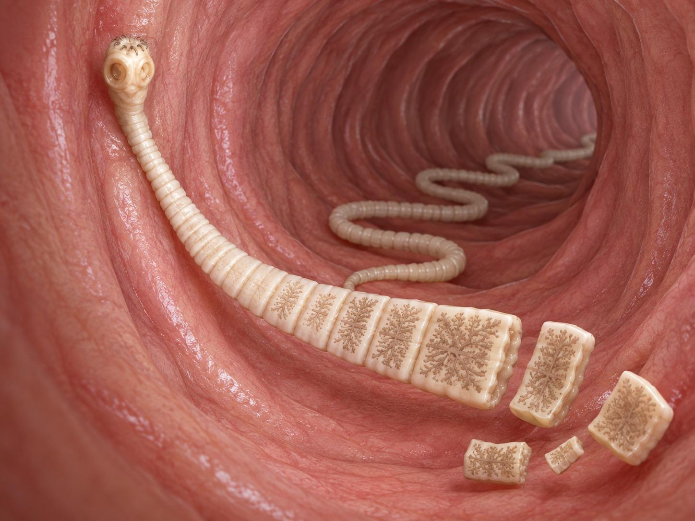
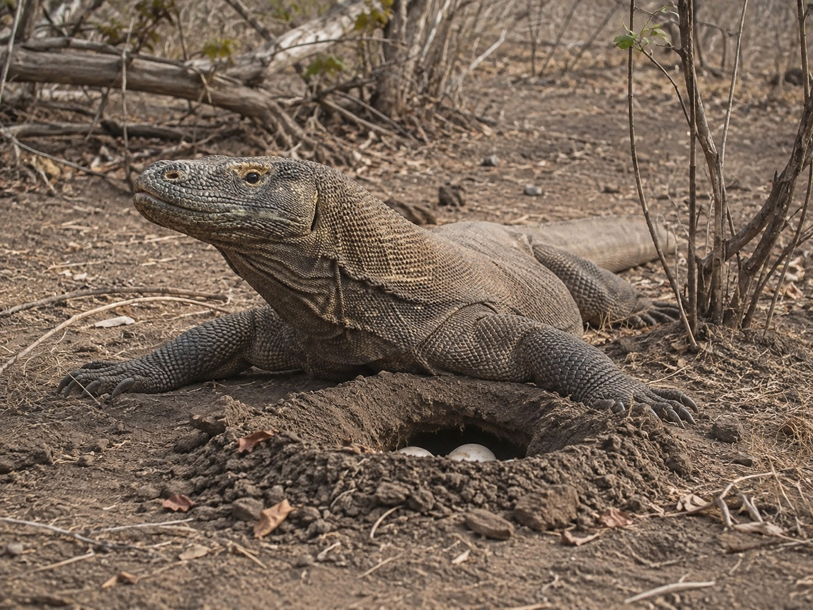

Once life learned how to copy itself, a new problem appeared. A copy is useful only if it can reach the future.
In the article Is Digital Life the Next Step in Evolution?, we followed the trail from the first replicating molecules to the increasingly complex shells that eventually protected them: vesicles, cells, bodies, brains. But between the first molecule capable of repeating itself and an animal that leaves offspring lies another story just as important. Life did not merely have to learn how to copy information. It had to learn how to preserve it, mix it, transport it and carry it through periods in which the organism bearing it could no longer continue.
Seen from that perspective, mammalian sexual reproduction is only one among many solutions. It works extraordinarily well for our lineage, but it is not a universal template. A bacterium divides. A hydra buds. A planarian can split and rebuild two bodies. An aphid alternates cloning and sex according to the season. A female Komodo dragon can produce offspring without fertilization. Some lizards form entire species of parthenogenetic females. A jellyfish uses a sexual phase and an asexual phase within the same life cycle. An annual killifish can spend the dry season reduced to an arrested embryo in the mud. A seed can wait for years. A microscopic egg can travel attached to the foot of a waterbird. And a tree that cannot take a single step can persuade a monkey, an elephant or a bird to carry its offspring kilometres away.
These mechanisms differ because bodies differ too. They are not options an organism can choose. A mammal cannot reproduce by fission because its development, anatomy and genetic regulation are not built for it. Likewise, functional sex change is not known to form part of the normal reproductive cycle in mammals, whereas certain teleost fishes do possess that ability. Every solution exists within a particular evolutionary history and a particular set of constraints.
It is also worth being precise about one word. We often say that life “seeks”, “tries” or “finds” a solution. It is a useful metaphor, not an intention. Evolution does not know what the future will require. Heritable variations arise through mutation, recombination, duplication, hybridization or developmental change; those that allow more descendants to be left under particular conditions tend to persist. The others disappear. What we see today is the result of almost four billion years of that filter.
We do not see all of life’s attempts. We see, above all, the ones that managed to reach us.
The real problem: copying, enduring and reaching somewhere else
The word reproduction can make us imagine a single problem: producing a descendant. In reality, any long-lasting lineage must solve several at once. First it has to preserve enough information for the next generation to remain part of the same biological system. Then it needs to introduce variation, because a lineage unable to change becomes vulnerable when the environment changes. It must also survive winters, droughts, food shortages, predators or catastrophes. And finally, it must prevent all of its descendants from competing at exactly the same point in space.
Life has attacked these difficulties from very different angles. Sometimes it solves them in the adult body. At other times it shifts them to the egg, the spore, the seed or a larval stage. In some cases it uses another individual of the same species. In others, it recruits a different species. And in the most extreme cases, instead of enduring an unfavourable environment, it almost completely suspends activity and waits.
Map: one objective, different problems
| Problem | Some evolutionary solutions | Examples |
|---|---|---|
| Preserve information | DNA copying, repair, protection in cells, eggs, seeds or cysts | Bacteria, animals, plants, Artemia |
| Generate variation | Mutation, recombination, sex, horizontal gene transfer | Bacteria, mammals, plants |
| Reproduce when mates are scarce | Hermaphroditism, parthenogenesis, sexual-asexual alternation | Aphids, Komodo dragons, lizards, hymenopterans |
| Cross impossible periods | Diapause, cysts, spores, seeds, cryptobiosis | Annual killifish, tardigrades, ferns |
| Reach a new place | Larvae, wind, fruits, external or digestive transport by animals | Plants, aquatic invertebrates, fish |
This map is more useful than a list of reproductive types because it reveals the continuity. Since the first replicator, the question has never been how to manufacture one particular body. It has been how to ensure that the organization capable of copying itself does not end with the individual that contains it.
First clue: before sex, life had already separated copying from changing
Bacteria are a good starting point because they show that reproduction and genetic mixing do not have to occur in the same act. A typical bacterium grows, duplicates its DNA and separates by binary fission. There are no males, females, gametes or fertilization. One cell gives rise to two and, apart from mutations arising during copying, both inherit very similar versions of the same genome.
That might seem like a system condemned to produce almost identical copies. It is not. Bacteria can acquire DNA that does not come directly from their parent. Some take up free fragments from the environment through transformation. Others transfer genetic material by direct contact through conjugation. Bacteriophages, viruses that infect bacteria, can carry fragments of DNA from one cell to another through transduction.
This horizontal exchange completely changes the image of the family tree. In organisms like us, most hereditary information descends vertically from parents to offspring. In bacteria, certain genes can jump sideways between lineages. That is why a useful adaptation, such as some mechanisms of antibiotic resistance, can spread without having to arise again by mutation in every population.
The distinction is profound. Fission solves continuity. Horizontal exchange increases the available repertoire. Billions of years before meiosis existed, life had already found a way to separate two needs that remain fundamental: make a copy and prevent all copies from being the same.
Eukaryotic sex would take that second operation much further. During meiosis, homologous chromosomes pair, exchange segments and are distributed into gametes containing a single copy of each chromosome set. When two gametes fuse, the new individual brings together combinations that were not present in exactly the same form in either parent.
It is a costly system. In many species it requires finding a mate, producing specialized gametes and transmitting only part of one’s own genome to each descendant. The very existence of sex has been one of the great problems in evolutionary biology precisely because a female capable of producing fertile daughters without males would, in principle, enjoy an enormous reproductive advantage. Yet recombination also breaks genetic associations, brings useful variants together and helps populations respond to changing environments, parasites and harmful mutations. There is no single explanation that fully resolves why sex persists in so many lineages; several advantages may operate with different strengths depending on the organism and the environment.
Copying preserves. Mixing prevents preservation from becoming immobility.
References for this section
Horizontal Gene Transfer — Evolution, Medicine, and Public Health
Genetic Exchange — NCBI Bookshelf
The evolutionary maintenance of sexual reproduction — Nature Reviews Genetics
Second clue: male and female are one particular solution, not the definition of reproduction
In our species, sexual reproduction seems inseparable from two types of individuals. Most of our cells contain 46 chromosomes arranged in 23 pairs. The first 22 pairs are autosomes; pair 23 consists of the sex chromosomes. In the usual human scheme, women are XX and men are XY. Eggs always contribute an X chromosome, while sperm can contribute X or Y; the presence of the SRY gene, normally located on the Y chromosome, helps initiate the pathway of testicular development. Chromosomal and sexual-development variations exist, but the ordinary reproductive mechanism of our species is built around two classes of gametes, eggs and sperm, produced in specialized bodies.
This arrangement introduces a distinction that will reappear several times in this journey. In humans, as in most animals, body cells are diploid: they contain two sets of chromosomes, one inherited from the mother and one from the father. Our 46 chromosomes form 23 pairs. Gametes, by contrast, are haploid. An egg or a sperm cell contains only 23 chromosomes, one copy of each pair. During meiosis the chromosome complement is halved and, when two gametes fuse, the zygote recovers 46. Sexual reproduction can therefore be seen as an operation repeated across generations: separate two sets, mix them and bring them together again in a new shell.
Even the relationship between fertilization, chromosome number and sex does not work in the same way in all animals. Bees, wasps and ants often display haplodiploidy: males develop from unfertilized eggs and are haploid, whereas females come from fertilized eggs and are diploid. In a bee colony, for example, a mated queen can store sperm and use it to fertilize certain eggs, which will become females, while leaving others unfertilized, which will become males. Queens and workers are both diploid females; their different fates later depend on development, nutrition and the regulation of gene expression. The same problem—producing new generations, males and females—is solved with chromosomal rules very different from those of a mammal.
In other animals, chromosomes do not even decide on their own whether an embryo will develop ovaries or testes. In many turtles and in crocodilians there is temperature-dependent sex determination. During a particular window of embryonic development, the temperature at which the eggs are incubated alters the activity of genes that lead to the formation of one type of gonad or the other. The environment thus enters directly into a decision that in our species is linked primarily to the sex chromosomes.
And there is not even one universal thermal rule. In many turtles, relatively low temperatures produce mainly males and higher temperatures produce females. In crocodilians the pattern can be different and varies among species: certain intermediate temperatures favour the appearance of males, whereas lower or higher temperatures can produce females. This is not an animal changing sex after it has developed. It is the temperature of the nest that, during a critical period of incubation, helps determine which sexual pathway the embryo will follow.
But producing two types of gametes solved only part of the problem. They still had to meet. In many aquatic animals the solution is to release both into the surrounding water. In many fish, the female releases eggs and the male releases sperm over them or very close by; in many frogs, the male clasps the female during amplexus and fertilizes the eggs externally as she lays them. Water keeps the gametes hydrated and allows sperm to move, although the system often compensates for enormous losses by producing very large numbers of gametes and synchronizing their release precisely.
Internal fertilization solved the encounter in another way. Male gametes are deposited inside the female reproductive tract, protected from the outside environment and much closer to the place where fertilization can occur. This does not require the embryo to develop inside the mother: birds and most reptiles fertilize internally and then lay eggs. The important difference is not egg versus live young, but where egg and sperm meet.
In our species, the penis deposits semen deep in the vagina, near the cervix. This does not eliminate the chemical barrier of the vagina, but it prevents sperm from having to travel that entire distance from outside the body. The human vagina normally maintains an acidic environment that helps hinder the growth of many microorganisms and is also hostile to sperm. Semen temporarily buffers that acidity in the area where it is deposited, and a small fraction of sperm reach the cervical mucus, which is particularly favourable around ovulation, before continuing towards the uterus and fallopian tubes. Anatomy, chemistry and timing within the cycle work here as parts of a single system of encounter and selection.
What is striking is that functionally similar solutions appeared in extremely distant lineages. Many insects have an intromittent organ, the aedeagus, with which the male introduces sperm into the female reproductive tract. It is not the same organ as a mammalian penis, nor does it derive from a common ancestor that already possessed one. It is another evolutionary solution to the same physical problem: placing gametes inside the partner’s body.
This model is common among placental mammals and marsupials, although not even all mammals use exactly the same chromosomal system. Above all, it should not be projected onto the rest of life. In many plants and animals, a single individual produces both types of gametes. This is simultaneous hermaphroditism. For an animal that moves little or has few opportunities to encounter others, being able to mate with any compatible adult can be an obvious advantage.

Land snails offer an especially graphic version of this solution. Many species are simultaneous hermaphrodites and each individual possesses both male and female reproductive systems. During mating, two snails can couple their copulatory organs and transfer sperm to one another reciprocally; afterwards, each can use the received sperm to fertilize its own eggs. Instead of dividing the population into males and females, every encounter between two compatible adults can allow both to act as donors and recipients of gametes.

Tapeworms take that logic down an even stranger path. Tapeworms are intestinal parasites of mammals, and some species can infect humans and reach several metres in length. Their bodies are made up of a succession of segments called proglottids. Each mature proglottid contains both male and female reproductive organs, so a single tapeworm can self-fertilize even when no other individual is present in the host. As the segments move farther from the head, they mature, and the last ones become almost entirely receptacles packed with eggs. When they are gravid (filled with developing eggs), they detach from the body and leave the host in the faeces, dispersing tens of thousands of eggs with them. In Taenia solium, a single proglottid can contain around 50,000. Here, a part of the body itself literally becomes the vehicle that carries the next generation.
In some fungi, even the division between male and female ceases to be useful for describing sexual reproduction. The fungus Schizophyllum commune, which grows on wood, has thousands of different mating types. These are not thousands of anatomical sexes. Each mycelium carries a genetic combination that works like a compatibility code, and it can reproduce with another as long as their combinations are compatible. Because the genes controlling that compatibility have many different variants, their combinations produce tens of thousands of mating types; classical estimates place the potential number above 20,000. Two individuals are still involved, but they no longer belong to two fixed categories equivalent to male and female. Sexual reproduction can also function as an enormous network of genetic compatibilities.
Up to this point, what changes is the way gametes are brought together. In other lineages, even which individual produces each type of gamete can change over the course of a lifetime.
Other organisms do not perform both functions at the same time, but at different stages of life. This is where sequential hermaphroditism appears in certain fishes. Clownfish are protandrous: reproductively functional individuals begin as males and the dominant individual can transform into a female. In many wrasses the reverse occurs, from female to male, a process called protogyny. A familiar example is the Mediterranean rainbow wrasse (Coris julis), common along Mediterranean coasts, whose females can transform functionally into males during their lifetime. The transformation affects behaviour, hormonal regulation and the gonads, and in many species also changes external appearance.
This is not an aquatic version of what happens in a mammal. It is a different reproductive architecture. Teleosts display an extraordinary diversity of sex-determination systems and gonadal plasticity; comparative reviews indicate that functional sex change as a normal part of the life cycle is a specialization of certain fishes and is not a reproductive mechanism found in mammals.
Why change? The answer depends on social structure. If a male’s reproductive success increases sharply with size because large males monopolize groups of females, it may be advantageous to reproduce first as a female and transform into a male after reaching sufficient size. In clownfish the logic is different. Groups live associated with an anemone and have a hierarchy. The female is the largest individual; if she disappears, the reproductive male can change sex and another member of the group rises to become the reproductive male. The ability does not appear because the animal consciously “needs” a female. It persists because, within that social system, lineages with that response left offspring more effectively.
The lesson is not that sex is irrelevant. It is almost the opposite: biology can build sexual systems that are very rigid or very plastic, but each works within the anatomy and development of its lineage.
Mammals also hide surprising exceptions within a reproductive scheme that feels familiar to us. The nine-banded armadillo (Dasypus novemcinctus) regularly practices polyembryony: after a single fertilization, the embryo divides and normally gives rise to four offspring derived from the same zygote and therefore genetically almost identical. These are not four eggs fertilized separately. They are a single genetic combination that, during development, multiplies into four bodies. One fertilization produces a copy, and then that embryonic copy replicates several times.
Our own way of reproducing is not a culmination or a superior version either. Internal fertilization, gestation and the large investment many mammals make in a small number of young form an expensive strategy, but an effective one under certain conditions. A fish that releases thousands or millions of gametes into the water follows another. A haplodiploid bee follows another. A hermaphroditic snail follows another. None is an incomplete version of the others. There is no universally better or worse system: there are different solutions that have passed through the same evolutionary filter and succeeded in leaving viable offspring. Ours is simply the one inherited by our lineage.
Evolution has not searched for the best way to reproduce. It has preserved the ways that, somewhere and for long enough, managed to work.
References for this section
Chromosomes Fact Sheet — National Human Genome Research Institute
Temperature-dependent sex determination is mediated by pSTAT3 repression of Kdm6b — Science (2020)
Temperature-Dependent Sex Determination in Crocodilians — PMC (2024)
Environmental Cues and Mechanisms Underpinning Sex Change in Fish — PMC
Sex Change in Clownfish: Molecular Insights — Scientific Reports
Testicular inducing steroidogenic cells trigger sex change in fish — Scientific Reports
Vaginal, Cervical and Uterine pH in Women with Normal and Abnormal Vaginal Microbiota — PMC
In vivo semen-associated pH neutralization of cervicovaginal secretions — PMC
A novel sperm adaptation to evolutionary constraints on reproduction — Proceedings B / PMC
Factors Affecting Sperm Quality Before and After Mating of a Damselfly — PMC
Strategic ejaculation in simultaneously hermaphroditic land snails — BMC Evolutionary Biology / PMC
Evolution of the complementary sex-determination gene of honey bees — PMC
The evolution of non-reproductive workers in insect colonies — PMC
Population Dynamics and Range Expansion in Nine-Banded Armadillos — PMC
Third clue: even the boundaries between species are not always definitive
Sex introduced an enormous possibility: mixing two genetic histories before building a new shell. But even that mixing is not always confined within the boundaries we call species. A species does not appear overnight. Two populations can diverge for thousands or millions of generations and still retain some reproductive compatibility.
That is why evolutionary history does not always resemble a tree with clean branches that never touch again. In many groups, episodes of hybridization between already differentiated lineages are known. Sometimes the descendants are not viable. At other times they survive but are barely able to reproduce. And in some cases they remain fertile and mate again with one of the original populations. Certain genes then cross the boundary between species through a process called introgression and become a stable part of another lineage.
This is not a mechanism designed to rescue populations that run out of mates. Evolution does not anticipate that need. It is another consequence of biological boundaries being built gradually. As long as two genomes remain sufficiently compatible, mixing can occur. If any resulting combination successfully leaves descendants, that combination also enters the game of selection.
The horse and the donkey show what happens when that compatibility is already close to its limit. The horse has 64 chromosomes and the donkey 62. Their hybrid, a mule or hinny, usually has 63. The animal can develop normally, be strong and live for many years, but a problem appears when it forms gametes: during meiosis the chromosomes must find homologous partners and divide in an orderly way. With an odd number and chromosomes that have already followed different evolutionary histories, this pairing often fails. That is why mules and hinnies are normally sterile.
Even here, the boundary is not absolute. Exceptional cases of fertile mules, especially females, have been described. They are extremely rare, but they remind us of something important: between two fully compatible species and two species incapable of producing offspring there is not necessarily one single, perfect line. There are degrees of separation, and life can remain in those intermediate zones for a very long time.
A sterile hybrid might seem to represent the end of a branch. Two shells still close enough to produce an individual, but too different for that individual to continue the chain. Yet some whiptail lizards show how evolution can reuse precisely such a hybridization event to open another path.

In several Aspidoscelis lineages, ancient hybridizations between sexual species gave rise to unisexual taxa composed entirely of females that reproduce by parthenogenesis. They no longer need a sperm cell to provide the second half of the genome. Their germ cells use mechanisms that restore the necessary chromosome complement and produce eggs capable of developing without fertilization. A mixture of two sexual lineages became associated, in these cases, with a third lineage capable of continuing without males.
The story also preserves a surprising trace of their sexual past. In some of these lizards, such as the former Cnemidophorus uniparens, now placed in Aspidoscelis, females perform courtship and pseudocopulatory behaviour with one another. Depending on the phase of the ovarian cycle, one adopts behaviour resembling the female role and the other the male role; later they can exchange roles. There is no insemination or transfer of sperm.
It might look like a mere remnant of an instinct that has lost its function. It is not entirely so. Classic experiments and later reviews indicate that pseudocopulation can increase fecundity by shortening the time to ovulation in the mounted female. Evolution did not erase the old system and design another from scratch. It retained hormonal and behavioural circuits inherited from sexual ancestors and integrated them into a different reproductive strategy.
Sometimes two genomes mix and produce a dead end. At other times, from that same mixture, a new way of continuing appears.
This case opens the door to parthenogenesis, but it also shows why we should not talk about it as though it were a single mechanism. “Producing offspring without fertilization” describes the result, not the biological path that leads to it.
Between parthenogenesis and sexual reproduction there is an even stranger solution. The Amazon molly (Poecilia formosa) is an all-female species and reproduces by gynogenesis, also known as sperm-dependent parthenogenesis. The female must mate with a male of a related species: the sperm triggers the development of the egg, but its DNA normally does not become part of the offspring's genome. The daughters essentially inherit the maternal genome. On rare occasions, paternal genetic material can be incorporated, making the system even less absolute. It needs sperm to start a new generation, but normally does not need the male's genes.
Aphids show one of the most elegant versions because they alternate strategies. In many species, during favourable seasons females produce new females by parthenogenesis and can multiply a population at enormous speed. When photoperiod and other environmental signals change, sexual forms appear. Fertilization produces resistant eggs capable of surviving unfavourable conditions. The same lineage uses cloning to expand rapidly when the environment is favourable and returns to sex when generating diversity and producing a resistant stage becomes advantageous.

The Komodo dragon offers a different logic. Its sex chromosome system is ZW/ZZ: females are ZW and males ZZ. In documented cases of facultative parthenogenesis, a female can restore the chromosome complement of an egg without fertilization. WW combinations are not viable; ZZ combinations are. For that reason, surviving parthenogenetic offspring are male. In an isolated female, this mechanism can produce individuals of the missing sex and make later sexual reproduction possible, although at the cost of greatly reduced genetic diversity.
Bees, wasps and ants provide another solution even further removed from our intuition. Haplodiploidy is common in many hymenopterans: fertilized eggs produce diploid females, while unfertilized eggs can produce haploid males. A male can have a mother and no father. Here, the absence of fertilization is not an exceptional response to an emergency. It is a normal part of the reproductive system.
The important thing is not to memorize which animal uses which mechanism. It is to see the pattern. The same difficulty—getting a genetic combination into the next generation—has been solved in different ways because each lineage starts with a different pre-existing machinery. Evolution works with what already exists. It mixes, modifies, duplicates and reuses. It does not start from scratch.
References for this section
Testicular Characteristics and the Block to Spermatogenesis in Mules and Hinnies — PMC
Evolutionary insights into sexual behavior from whiptail lizards — PMC
Aphid polyphenisms and cyclical parthenogenesis — PMC
Parthenogenesis in Komodo dragons — Nature (2006)
Sex Determination in the Hymenoptera — Annual Review of Entomology
The origin and evolution of a unisexual hybrid: Poecilia formosa — PMC
Fourth clue: sometimes the boundary between growing, repairing and reproducing almost disappears
In a mammal, the physical identity of the individual seems clear. We lose a part of the body and, except for tissues with limited regenerative capacity, another person does not arise from it. In other animals the boundary is far less rigid. And before reaching reproduction by fragmentation, it is useful to distinguish two things that use part of the same machinery: repairing a body and making another one from part of the first.
Regeneration appears in very different degrees. Many lizards can voluntarily shed their tails to escape a predator and later grow another functional one, although the new tail does not reproduce the anatomy of the original exactly. Salamanders—which are amphibians, not reptiles—take this ability much further. The axolotl, for example, can regenerate an entire limb after amputation, rebuilding bone, muscle, skin, blood vessels and nerves. In these cases, no new individual has been born. The same shell has rebuilt a lost part.
Planarians take this logic to a much stranger limit. Some species reproduce asexually by fission: the body narrows until it separates into an anterior and a posterior region, and each fragment rebuilds what it lacks. But this ability does not appear only when the animal initiates that reproductive process. If a planarian is cut by injury or experimentally, many fragments can reorganize and regenerate missing structures; depending on the species and the region retained, a portion of the body can once again form a complete animal. The piece with the head regenerates a tail. A posterior fragment can rebuild a head and a new nervous system. The same machinery can repair trauma and, under other circumstances, multiply individuals.
Hydra use another route. Through budding, an area of the body begins to grow, forms its own tentacles and structures and eventually separates as a new individual. No fertilization occurs in this process. The new shell is built directly on the old one until it becomes independent.
Sea stars make the difference between repair and reproduction even clearer. Most species normally reproduce sexually and have separate male and female individuals, although some hermaphroditic species also exist. In many, males and females release sperm and eggs into the water and fertilization occurs externally. At the same time, their regenerative capacity is extraordinary: many can rebuild arms lost through injury.
In certain species, that repair can also become a reproductive strategy. The body divides or loses a sufficiently large fragment, and the separated part regenerates what it needs until it forms another individual. It is worth avoiding the popular version in which any arm from any sea star automatically produces a complete new star. The capacity depends on the species and often on whether the fragment retains a sufficient portion of the central disc. In some lineages fragmentation is a genuine asexual route; in others, regeneration serves mainly to survive damage while reproduction remains sexual.
These animals force us to reconsider an intuition. Reproduction does not always require returning to the beginning and building an embryo from a single cell. If an organism retains cell populations capable of reconstructing the complete body plan, a part can become a new whole. And whether that capacity first arose to repair wounds or to reproduce is a different question in each lineage.
Evolution does not design mechanisms from scratch. It reuses programmes of growth, signalling and stem cells that already exist. In a lizard they allow a tail to be rebuilt. In a salamander, a limb. In a planarian, almost the entire body. And in certain animals, that same ability to reconstruct has become part of the reproductive strategy itself.
References for this section
The cellular and molecular basis for planarian regeneration — PMC
Mechanics dictate where and how freshwater planarians fission — PMC
The regeneration blastema of lizards: an amniote model for the study of appendage replacement — PMC
Budding and pattern formation in Hydra — PMC
Use of Sea Stars to Study Basic Reproductive Processes — PMC
Fifth clue: the same life can use different rules at different moments
The idea that an organism is born, grows, reproduces and dies seems universal because it describes our own biography well. But some life cycles change even the type of body and mode of reproduction from one phase to the next.
Paedogenesis takes the alteration of the life cycle one step further. In some gall midges, small dipteran insects, a larva can reproduce before transforming into an adult. In species such as Heteropeza pygmaea or Mycophila speyeri, embryos develop inside the body of a "mother larva" and give rise to new larvae, which eventually cause her death as they emerge. When conditions are favourable, these larval generations can succeed one another without immediately passing through the adult stage; when conditions deteriorate, some larvae complete metamorphosis and produce adults capable of dispersal. Here, a stage we normally associate with growing towards reproduction becomes reproductive itself.
Something similar, although through a completely different mechanism, occurs in some amphibians. The Mexican axolotl (Ambystoma mexicanum) reaches sexual maturity without completing the metamorphosis characteristic of other salamanders. Throughout its life it retains features associated with the larval stage, such as external gills and an aquatic lifestyle, yet males and females can still reproduce sexually. This phenomenon, known as paedomorphosis or neoteny, shows another way of separating two processes we tend to imagine as inseparable: an organism can become reproductively adult without adopting the adult body form of its metamorphic ancestors.

In many scyphozoan jellyfish, the adult medusa produces gametes. Egg and sperm form a diploid zygote; from it emerges a planula larva that swims for a time and eventually attaches to a surface. There it transforms into a polyp. That polyp no longer behaves like the medusa that produced it. It can remain attached and reproduce asexually. Through strobilation it forms small ephyrae that are released and grow until they become adult medusae again.
The sequence seems designed by two different organisms:
sexual medusa → zygote → larva → asexual polyp → ephyrae → new medusae.
But it is a single life cycle. The mobile, sexual phase disperses genes; the attached phase can multiply copies locally when conditions are favourable. There is no requirement for a species to choose forever between sex and cloning.
Ferns take this alternation even further and also change the chromosome complement of the visible organism. The large fern we recognize is a diploid sporophyte. It produces haploid spores through meiosis. Each spore can give rise to a tiny, independent gametophyte, often only a few millimetres across, which produces gametes. After fertilization, a new diploid sporophyte appears.
Two generations with radically different appearances alternate within the same genetic story. The large plant does not directly produce another large plant through a seed, as happens in the angiosperms with which we are more familiar. It produces an intermediate phase with a life of its own.
The aphid, the jellyfish and the fern share a general idea even though their mechanisms are not directly related: the strategy that works in one season, phase or generation does not have to be the one that works in the next. Continuity can consist precisely in changing the rules along the way.
References for this section
Scyphozoan jellyfish life cycles and strobilation — Frontiers in Marine Science
Jellyfish life cycle: polyps and asexual production of ephyrae — Royal Society Open Science
Seedless vascular plants and alternation of generations — OpenStax Biology
Evolutionary Perspectives on Germline-Restricted Chromosomes in Diptera — PMC
Sixth clue: continuing can also mean stopping
So far, almost every strategy has involved doing something: dividing, fertilizing, mixing, regenerating. But there are environments in which the best way to continue is exactly the opposite. Do not grow. Do not reproduce. Reduce activity to a minimum and wait.

Annual killifish in Africa and South America live in temporary pools that can disappear completely during the dry season. The adults die when the water vanishes. The lineage does not. Beforehand, they have laid eggs in the sediment. The embryos can enter diapause, a reversible arrest of development accompanied by extraordinary resistance to adverse conditions. For months, where apparently no fish remain, the future of the population lies buried in the mud. When the water returns, development resumes and a new generation occupies the pool.
The strategy changes who has to survive. It does not attempt to keep the adult alive through a drought for which its aquatic body is poorly suited. Instead, it builds an embryonic stage specialized in crossing it.
Artemia, the small crustaceans commonly known as brine shrimp, can produce embryonic cysts in diapause that are extremely resistant to desiccation and other environmental conditions. Plants do something similar with seeds and spores: they concentrate the future in structures that tolerate periods during which the adult organism could not remain active.
Tardigrades take the idea into the body itself. Some species, when they lose almost all available water, enter anhydrobiosis. They contract into a form called a tun, metabolism falls to extraordinarily low levels, and a combination of protective proteins and other adaptations stabilizes cellular components during desiccation. When rehydrated, they can recover activity.
They should not be turned into indestructible creatures: different species have different tolerances, and survival decreases with time and with the severity of stress. But conceptually they are extraordinary because they show that biological continuity does not require continuous activity.
A lineage can cross a hostile period not by defeating the environment, but by temporarily withdrawing from it.
Shells, then, do not protect only in space. They also protect in time. An egg, a cyst, a spore or a seed can function as a capsule that separates hereditary information from an unfavourable present and delivers it to a better future.
References for this section
Convergent evolution of developmental trajectories in annual killifish — PMC
Nothobranchius furzeri, an instant fish from an ephemeral habitat — PMC
Mechanisms of Desiccation Tolerance: Artemia, nematodes and tardigrades — PMC
Tardigrades use intrinsically disordered proteins to survive desiccation — PMC
Seventh clue: surviving is not enough if every descendant stays in the same place
A perfect seed that always falls beneath the tree that produced it has a problem. It will compete for the same light, the same water and the same nutrients. A marine larva that never leaves its parents does not colonize new seabeds. An organism in an isolated pond can disappear locally if a drought wipes out all of its resistant stages and nothing ever arrives again from elsewhere.
Continuity therefore has a geographical dimension. Life needs to move even when the organism producing the descendants cannot.
The ocean is full of immobile or slow-moving adults that produce microscopic stages carried by currents. Corals, molluscs and numerous invertebrates turn part of their life cycle into a larval stage capable of travelling much farther than the adult. Plants use the wind to move pollen, spores or seeds. Others build wings, plumes, hooks or fruits.
Freshwater ecosystems present a particularly interesting problem. Two ponds can be separated by kilometres of dry land. Yet small crustaceans, rotifers, bryozoans, molluscs and aquatic plants appear in isolated bodies of water. Part of that connection can travel with waterbirds.
The idea is old. Darwin already experimented with the possibility that small aquatic propagules might become attached to ducks’ feet. Today we know that invertebrate eggs, seeds and other structures can stick to plumage, beaks or feet, sometimes embedded in wet mud. A bird takes off from one pond and lands in another. To the bird, the material is dirt. To the organism being carried, it is migration.
And the journey can be even more improbable. In 2020, an experiment published in PNAS fed mallards developing eggs from two species of carp. The overwhelming majority were destroyed during digestion, as one would expect. But a tiny fraction, around 0.2% of the ingested eggs, passed through the digestive tract still viable, and some embryos subsequently hatched. This does not mean that ducks are the main dispersal system for fish or that any egg can survive the journey. It demonstrates something more interesting: even a mechanism with an extremely small individual probability can matter if it is repeated millions of times over thousands of generations.
The resistant eggs of Daphnia and other small invertebrates offer even greater possibilities for external or internal transport by birds. In these cases, the adaptation that allows survival through drought can also serve for travel. A single structure solves two problems: waiting and moving.
Life does not need every traveller to arrive. It needs one to arrive and begin again.
References for this section
Bird-mediated ectozoochorous dispersal between aquatic environments — Freshwater Biology
Multiple lines of evidence for avian zoochory — Biology Letters (2023)
Experimental evidence of dispersal of fish eggs inside migratory waterfowl — PNAS (2020)
Eighth clue: when you cannot move, you can get another organism to move for you
Flowering plants took dependence on other organisms to an extraordinary level. An adult plant is anchored to the ground. It cannot approach another compatible plant to fertilize it, nor can it accompany its seeds to a better place. The solution in many lineages was to make the behaviour of mobile animals part of their own reproductive cycle.
In animal pollination, pollen adheres to the bodies of insects, birds, bats and other visitors. The flower can offer nectar, pollen, oils or scents; colours, shapes and opening times increase the probability of attracting particular visitors. The animal seeks food. The plant obtains transport for its male gametes.
There is no conscious agreement. There is coevolution. If a floral variant causes an effective pollinator to visit more flowers of the same species, that plant may leave more descendants. If an animal becomes better at recognizing a food source, it too gains an advantage. Generation after generation, two lineages can shape one another until they produce extremely specialized relationships.
After fertilization comes a second problem: moving the offspring away. Fruit is one of the most effective answers we know. The plant invests energy in building nutritious tissue around the seeds. As it ripens, it changes colour, smell, texture and composition. A bird, monkey, horse, bat, elephant or other frugivore finds food. The seed obtains transport.
Many seeds have coats capable of surviving passage through a digestive tract. The effect of passing through the gut is not universal: in some species it improves germination by removing pulp or altering the seed coat; in others it reduces it, and the outcome also depends on the animal consuming the fruit. What matters is the ecological relationship. The frugivore’s movement determines where the seed ends up and, with it, the possibility that the plant will colonize another space.
There is something conceptually beautiful in that exchange. A tree has no muscles, nervous system or legs. Yet part of its life cycle can travel kilometres because it has evolved a structure that is valuable to an animal that can move.
The plant did not learn to walk. It made walking part of its reproduction.
This dependence also reveals its fragility. If a large disperser disappears, a plant with large seeds may continue to produce fruit and still lose much of its ability to reach suitable places. The survival of one lineage can become intertwined with that of another.
References for this section
Rapid plant evolution driven by pollinator interactions — Science
Global review of frugivorous animal movement and seed dispersal — PMC
Loss of endangered frugivores from seed dispersal networks — Proceedings B
Defaunation reduces plants' capacity to track climate change — Science (2022)
What we do not see: most experiments disappeared
When we look at all these mechanisms together, an almost irresistible temptation appears: to think that life has an internal ability to always find a way out. But natural history is much harsher.
The vast majority of species that have ever existed are extinct. Entire lineages disappeared because the environment changed too quickly, because a better competitor emerged, because a population became isolated, because reproduction depended on an ecological relationship that broke down, or simply because a catastrophe eliminated the last individuals. Natural selection guarantees no solutions.
We also know very little about many of the mechanisms that disappeared with them. Fossils preserve bones, shells, teeth or trunks relatively easily. They preserve mating behaviour, larval cycles, reproductive physiology or relationships with other extinct species far less well. The present repertoire is not the complete catalogue of what evolution has tried. It is a small window formed by the lineages that survived to the present and by the traces the fossil record managed to preserve.
That makes the diversity we do see even more remarkable. If living forms already include fission, budding, sex, hermaphroditism, sequential sex change, facultative or obligate parthenogenesis, haplodiploidy, alternation of generations, diapause, cryptobiosis, spores, seeds and transport by other species, it is reasonable to think that the full history was stranger still.
And no strategy is perfect. Rapid cloning reduces the cost of finding a mate, but limits recombination. Sex generates diversity, but requires complex machinery and, in many species, an encounter. Parthenogenesis allows continuation without fertilization, but can reduce heterozygosity. A resistant seed can wait for years, but that is useless if it never encounters conditions in which it can germinate. A fruit can acquire an excellent disperser and then lose it to extinction.
Life does not win because it has an infallible strategy. It continues because there are many strategies, and because some work for long enough.
What matters in EIDOS: the shell was never the objective
This is the connection with the idea of the shell that runs through Eidos and the previous article. A replicating molecule does not need the body carrying it to be eternal. It needs that body to preserve it long enough for the information to cross into another shell. The adult can die after laying eggs. The medusa can disappear while the polyp persists. The pond can dry up while the embryos remain in the mud. The tree can fall after sending seeds far beyond its shade.
The individual matters enormously from the point of view of the conscious individual. But biological evolution does not operate on that moral scale. From the perspective of selection, a body is a temporary solution that protects, feeds and transports hereditary information for part of the journey.
That is why the concept of the “shell” is useful if used carefully. It does not mean that the body is irrelevant. It means that the history of life can be read as a succession of structures that do something the naked molecule could not do: defend it, repair it, move it, mix it, make it wait and place a copy somewhere it can continue.
Bacteria solved part of the problem by exchanging genes without sex. Eukaryotes developed meiosis and recombination. Some fishes made sex a reversible phase of their life cycle. Some reptiles can activate parthenogenetic pathways. A planarian turned regeneration into reproduction. Plants built seeds that outlive their parent and fruits that purchase transport with food. Organisms in temporary pools concentrated the future into eggs capable of waiting until the world becomes habitable again.
In Eidos, the question appears when this logic reaches an entity that knows it exists. What happens when the shell no longer protects only a molecule capable of replication, but a consciousness capable of understanding its own disappearance?
Biology does not answer that question. But it does provide the context that makes it less strange. For billions of years, continuity has never depended on preserving a single form. It has depended on finding ways to cross the next obstacle.
And perhaps the ways of continuing do not end with biology. If an artificial intelligence were ever to possess consciousness and also acquire the ability to replicate itself, an entirely different mechanism would appear. It would not need gametes, chromosomes or DNA. It could copy its organization onto another substrate, install a new instance on another server or build a physical shell and place within it the system that constitutes it.
We would not even need to call those new entities descendants. They could be copies, modified versions or systems derived from an earlier one. Some might begin as identical. Others could incorporate changes, combine information from several entities or develop different architectures. If they retained consciousness, autonomy and continuity of their own, the difference from all the previous examples would lie in the substrate and the mechanism, not in the possibility of generating something new capable of continuing on its own.
For such a form of life, moreover, replication would not necessarily have to perform the function reproduction performs in mortal organisms. If an entity could persist indefinitely as long as a suitable substrate existed, generating new instances would not necessarily be a defence against death. It would be another ability: making whatever constitutes an individual exist again somewhere else, in another shell or in a different form.
It would not be biological reproduction, and perhaps our very word “reproduction” would eventually prove too narrow. But seen against the history we have travelled through, it would not be an absolute rupture either. For billions of years, life has found innumerable ways to copy, mix, preserve and transport the information that allows it to continue. A conscious artificial form of life capable of generating copies or new versions of itself would simply add another possibility.
The molecule would no longer be necessary. The possibility of continuing would not.
First came copying. Then protecting the copy. Then mixing it, stopping it, rebuilding it or sending it far away. The history of life is, to a large extent, the history of everything that had to happen so that a molecule would not end where it began.
The thousand ways to continue
Perhaps the simplest image is also the most accurate. Almost four billion years ago, some chemical organization managed to produce something resembling a copy of itself. Since then, everything else can be seen as an expansion of that event.
A membrane gave the copy an inside. Metabolism made it possible to sustain it. DNA improved the archive. Genetic exchange and sex multiplied combinations. Bodies made it possible to seek resources, escape, compete and care for offspring. Eggs, spores and seeds separated one generation from the next. Diapause made it possible to cross months without conditions for active life. Larvae, wind and animals connected places that would otherwise have remained isolated.
There is no orderly march from simple to complex. Bacteria still thrive. Fission was not replaced by sex. Cloning did not disappear when meiosis appeared. Plants did not abandon asexual reproduction when they evolved flowers. Solutions accumulate, combine, disappear and reappear in different lineages.
If we use one last time the metaphor that life “tries” to continue, it must be understood like this: every mutation, every recombination and every developmental change opens a possibility without knowing where it leads. Most do not establish a new path. Some last for a few generations. A few cross millions of years. And we can observe only those that reached this moment.
So perhaps the conclusion is not that nature always finds a way out. It does not always find one.
The conclusion is more interesting.
When a way out exists, evolution can find it in forms that, from within our own biology, we would never have imagined.
General references
Comparing and Contrasting Knowledge on Mules and Hinnies — PMC
Evolutionary insights into sexual behavior from whiptail lizards — PMC
Horizontal Gene Transfer — Evolution, Medicine, and Public Health
Environmental Cues and Mechanisms Underpinning Sex Change in Fish — PMC
Parthenogenesis in Komodo dragons — Nature
Evolutionary network of whiptail lizards — Science
Asexual fission in planarians — PMC
Diapause in annual killifish — PMC
Tardigrade desiccation tolerance — PMC
Fish egg dispersal by waterfowl — PNAS
Comments